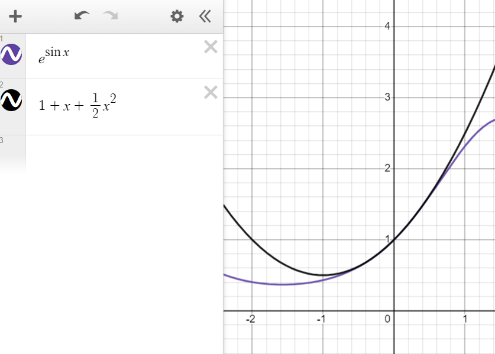
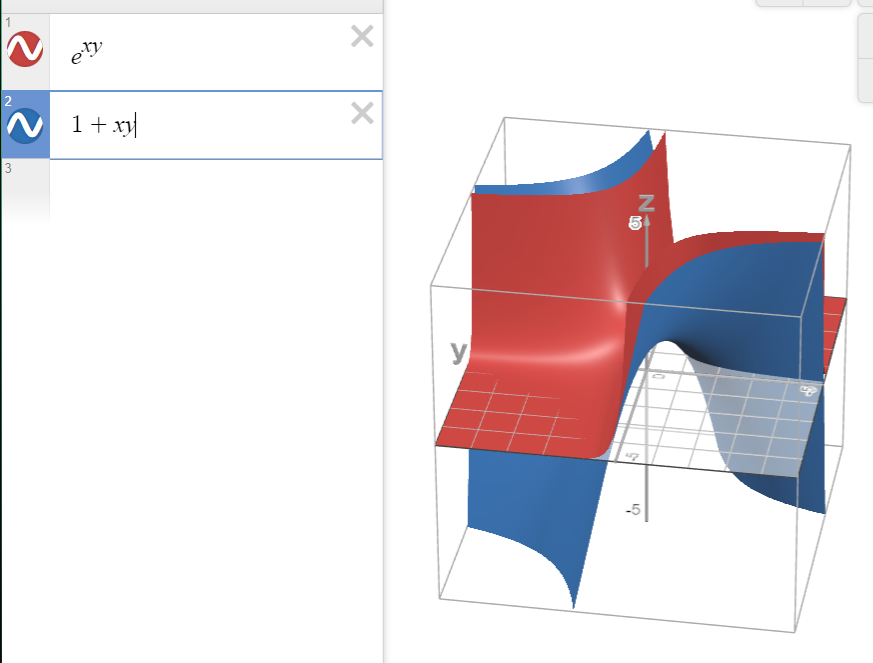

Calculus, Homework 10
Problem 1
Are the following functions differentiable at ( 0 , 0 ) (0,0) ( 0 , 0 )
Subproblem A
f ( x , y ) = { 2 x y 2 x 2 + y 2 , ( x , y ) ≠ ( 0 , 0 ) 0 , ( x , y ) = ( 0 , 0 ) f(x,y)=\begin{cases}
\displaystyle\frac{2xy^2}{x^2+y^2}, \ \ \ (x, y) \neq(0,0)\\
0, \ \ \ (x,y)=(0,0)
\end{cases} f ( x , y ) = ⎩ ⎨ ⎧ x 2 + y 2 2 x y 2 , ( x , y ) = ( 0 , 0 ) 0 , ( x , y ) = ( 0 , 0 )
First, let's check whether the function is continuous. For this, limits from all sides (for all paths) have to exist.
Assume x = p cos ϕ , y = p sin ϕ x=p\cos \phi, y=p\sin \phi x = p cos ϕ , y = p sin ϕ
lim ( x , y ) → ( 0 , 0 ) 2 x y 2 x 2 + y 2 = lim p → 0 2 p 3 cos ϕ sin 2 ϕ p 2 ( cos 2 ϕ + sin 2 ϕ ) = lim p → 0 2 p cos ϕ sin 2 ϕ = 0 \lim_{(x,y)\to(0,0)}\frac{2xy^2}{x^2+y^2}=\lim_{p\to0}\frac{2p^3\cos \phi\sin^2 \phi}{p^2(\cos^2\phi+\sin^2\phi)}=\lim_{p\to0}2p\cos \phi\sin^2\phi=0 ( x , y ) → ( 0 , 0 ) lim x 2 + y 2 2 x y 2 = p → 0 lim p 2 ( cos 2 ϕ + sin 2 ϕ ) 2 p 3 cos ϕ sin 2 ϕ = p → 0 lim 2 p cos ϕ sin 2 ϕ = 0
Thus, the function is continuous.
Now, check whether it's differentiable. Per the definition:
lim ( t , k ) → ( 0 , 0 ) f ( t , k ) − f ( 0 , 0 ) + t − k t 2 + k 2 = lim ( t , k ) → ( 0 , 0 ) 2 t k 2 t 2 + k 2 + t − k t 2 + k 2 = \lim_{(t,k)\to(0,0)}\frac{f(t, k) - f(0, 0)+t-k}{\sqrt{t^2+k^2}}=\lim_{(t,k)\to(0,0)}\frac{\frac{2tk^2}{t^2+k^2}+t-k}{\sqrt{t^2+k^2}}= ( t , k ) → ( 0 , 0 ) lim t 2 + k 2 f ( t , k ) − f ( 0 , 0 ) + t − k = ( t , k ) → ( 0 , 0 ) lim t 2 + k 2 t 2 + k 2 2 t k 2 + t − k =
lim ( t , k ) → ( 0 , 0 ) 2 t k 2 + t 3 + t 2 k − t k 2 − k 3 t 2 + k 2 t 2 + k 2 = lim ( t , k ) → ( 0 , 0 ) t 3 + t 2 k + t k 2 − k 3 ( t 2 + k 2 ) 3 2 \lim_{(t,k)\to(0,0)}\frac{\frac{2tk^2+t^3+t^2k-tk^2-k^3}{t^2+k^2}}{\sqrt{t^2+k^2}}=\lim_{(t,k)\to(0,0)}\frac{t^3+t^2k+tk^2-k^3}{(t^2+k^2)^{\frac{3}{2}}} ( t , k ) → ( 0 , 0 ) lim t 2 + k 2 t 2 + k 2 2 t k 2 + t 3 + t 2 k − t k 2 − k 3 = ( t , k ) → ( 0 , 0 ) lim ( t 2 + k 2 ) 2 3 t 3 + t 2 k + t k 2 − k 3
Collapse to polar coordinates once again:
lim p → 0 p 3 cos 3 α + p 3 cos 2 α sin 3 α + p 3 cos α sin 2 α − p 3 sin α ( p 2 cos 2 α + p 2 sin 2 α ) 3 2 = lim p → 0 p 3 A p 3 = A , \lim_{p\to0}\frac{p^3\cos^3\alpha+p^3\cos^2\alpha\sin^3\alpha+p^3\cos\alpha\sin^2\alpha-p^3\sin\alpha}{(p^2\cos^2\alpha+p^2\sin^2\alpha)^{\frac{3}{2}}}=\lim_{p\to0}\frac{p^3\Alpha}{p^3}=\Alpha, p → 0 lim ( p 2 cos 2 α + p 2 sin 2 α ) 2 3 p 3 cos 3 α + p 3 cos 2 α sin 3 α + p 3 cos α sin 2 α − p 3 sin α = p → 0 lim p 3 p 3 A = A ,
where A = cos 3 α + cos 2 α sin α + cos α sin 2 α − sin 3 α \Alpha=\cos^3\alpha+\cos^2\alpha\sin\alpha+\cos\alpha\sin^2\alpha-\sin^3\alpha A = cos 3 α + cos 2 α sin α + cos α sin 2 α − sin 3 α A \Alpha A α \alpha α ( 0 , 0 ) (0,0) ( 0 , 0 )
Subproblem B
f ( x , y ) = { x ∣ y ∣ x 2 + y 2 , ( x , y ) ≠ ( 0 , 0 ) 0 , ( x , y ) = ( 0 , 0 ) f(x,y)=\begin{cases}
\displaystyle\frac{x|y|}{\sqrt{x^2 + y^2}}, \ \ \ (x, y) \neq(0,0)\\
0, \ \ \ (x,y)=(0,0)
\end{cases} f ( x , y ) = ⎩ ⎨ ⎧ x 2 + y 2 x ∣ y ∣ , ( x , y ) = ( 0 , 0 ) 0 , ( x , y ) = ( 0 , 0 )
The existence of ∣ x ∣ |x| ∣ x ∣
Firstly, make sure that the function is continuous:
Assume x = p cos ϕ , y = p sin ϕ x=p\cos \phi, y=p\sin \phi x = p cos ϕ , y = p sin ϕ
lim ( x , y ) → ( 0 , 0 ) x ∣ y ∣ x 2 + y 2 = lim p → 0 p ∣ p ∣ cos ϕ ∣ sin ϕ ∣ p 2 ( cos 2 ϕ + sin 2 ϕ ) = lim p → 0 p ∣ p ∣ cos ϕ ∣ sin ϕ ∣ ∣ p ∣ = \lim_{(x,y)\to(0,0)}\frac{x|y|}{\sqrt{x^2+y^2}}=\lim_{p\to0}\frac{p|p|\cos\phi|\sin\phi|}{\sqrt{p^2(\cos^2\phi+\sin^2\phi)}}=\lim_{p\to0}\frac{p|p|\cos\phi|\sin\phi|}{|p|}= ( x , y ) → ( 0 , 0 ) lim x 2 + y 2 x ∣ y ∣ = p → 0 lim p 2 ( cos 2 ϕ + sin 2 ϕ ) p ∣ p ∣ cos ϕ ∣ sin ϕ ∣ = p → 0 lim ∣ p ∣ p ∣ p ∣ cos ϕ ∣ sin ϕ ∣ =
= lim p → 0 p cos ϕ ∣ sin ϕ ∣ = 0 =\lim_{p\to0}p\cos\phi|\sin\phi|=0 = p → 0 lim p cos ϕ ∣ sin ϕ ∣ = 0
Now, per the derivative definition, check whether the function is differentiable ( h = t 2 + k 2 ) (h=\sqrt{t^2+k^2}) ( h = t 2 + k 2 )
lim ( t , k ) → ( 0 , 0 ) f ( t , k ) − f ( 0 , 0 ) + t − k t 2 + k 2 = lim ( t , k ) → ( 0 , 0 ) t ∣ k ∣ t 2 + k 2 + t − k t 2 + k 2 = \lim_{(t,k)\to(0,0)}\frac{f(t, k) - f(0, 0)+t-k}{\sqrt{t^2+k^2}}=\lim_{(t,k)\to(0,0)}\frac{\frac{t|k|}{\sqrt{t^2+k^2}}+t-k}{\sqrt{t^2+k^2}}= ( t , k ) → ( 0 , 0 ) lim t 2 + k 2 f ( t , k ) − f ( 0 , 0 ) + t − k = ( t , k ) → ( 0 , 0 ) lim t 2 + k 2 t 2 + k 2 t ∣ k ∣ + t − k =
= lim ( t , k ) → ( 0 , 0 ) t ∣ k ∣ + t h − k h h 2 =\lim_{(t,k)\to(0,0)}\frac{t|k|+th-kh}{h^2} = ( t , k ) → ( 0 , 0 ) lim h 2 t ∣ k ∣ + t h − kh
Transitioning to polar coordinates:
lim p → 0 p cos α ∣ p sin α ∣ + p cos α ∣ p ∣ − p sin α ∣ p ∣ p 2 = lim p → 0 ∣ p ∣ p ( cos α sin α + cos α − sin α ) = \lim_{p\to0}\frac{p\cos\alpha|p\sin\alpha|+p\cos\alpha|p|-p\sin\alpha|p|}{p^2}=\lim_{p\to0}\frac{|p|}{p}(\cos\alpha\sin\alpha+\cos\alpha-\sin\alpha)= p → 0 lim p 2 p cos α ∣ p sin α ∣ + p cos α ∣ p ∣ − p sin α ∣ p ∣ = p → 0 lim p ∣ p ∣ ( cos α sin α + cos α − sin α ) =
= lim p → 0 sgn ( p ) A ( α ) =\lim_{p\to0}\text{sgn}(p)\Alpha(\alpha) = p → 0 lim sgn ( p ) A ( α )
The limit of function sgn ( p ) \text{sgn}(p) sgn ( p ) lim p → 0 + sgn ( p ) = 1 \lim_{p\to0^+}\text{sgn}(p)=1 lim p → 0 + sgn ( p ) = 1 lim p → 0 − sgn ( p ) = − 1 \lim_{p\to0^-}\text{sgn}(p)=-1 lim p → 0 − sgn ( p ) = − 1
Subproblem C
f ( x , y ) = 1 1 + x − y f(x,y)=\frac{1}{1+x-y} f ( x , y ) = 1 + x − y 1
Once again, determine whether the function is continuous: the function is continuous because the limit is easily calculated and constant for all paths: lim ( x , y ) → ( 0 , 0 ) 1 1 + x − y = 1 1 + 0 − 0 = 1 \lim_{(x,y)\to(0,0)}\frac{1}{1+x-y}=\frac{1}{1+0-0}=1 lim ( x , y ) → ( 0 , 0 ) 1 + x − y 1 = 1 + 0 − 0 1 = 1
Now, is the function continuous at ( 0 , 0 ) (0,0) ( 0 , 0 )
∂ ∂ x f ( x , y ) = lim h → 0 f ( 0 + h , 0 ) − f ( 0 , 0 ) h = lim h → 0 1 1 + h − 0 − 1 h = lim h → 0 1 − 1 − h h ( 1 + h ) = − 1 \frac{\partial}{\partial x}f(x,y)=\lim_{h\to0}\frac{f(0+h, 0)-f(0,0)}{h}=\lim_{h\to0}\frac{\frac{1}{1+h-0}-1}{h}=\lim_{h\to0}\frac{1-1-h}{h(1+h)}=-1 ∂ x ∂ f ( x , y ) = h → 0 lim h f ( 0 + h , 0 ) − f ( 0 , 0 ) = h → 0 lim h 1 + h − 0 1 − 1 = h → 0 lim h ( 1 + h ) 1 − 1 − h = − 1
∂ ∂ y f ( x , y ) = lim h → 0 f ( 0 , 0 + h ) − f ( 0 , 0 ) h = lim h → 0 1 1 + 0 − h − 1 h = lim h → 0 1 − 1 + h h ( 1 + h ) = 1 \frac{\partial}{\partial y}f(x,y)=\lim_{h\to0}\frac{f(0, 0+h)-f(0,0)}{h}=\lim_{h\to0}\frac{\frac{1}{1+0-h}-1}{h}=\lim_{h\to0}\frac{1-1+h}{h(1+h)}=1 ∂ y ∂ f ( x , y ) = h → 0 lim h f ( 0 , 0 + h ) − f ( 0 , 0 ) = h → 0 lim h 1 + 0 − h 1 − 1 = h → 0 lim h ( 1 + h ) 1 − 1 + h = 1
Partial derivatives can be easily calculated ⟹ \implies ⟹ ( 0 , 0 ) (0,0) ( 0 , 0 )
Problem 2
Let functions u , v , w u, v, w u , v , w u : R n → R , v : R m → R u\colon\mathbb{R}^n\to\mathbb{R}, v\colon\mathbb{R}^m\to\mathbb{R} u : R n → R , v : R m → R R k → R \mathbb{R}^k\to\mathbb{R} R k → R
Subproblem A
f = u v w 2 f=uvw^2 f = uv w 2
( d f ) p = ( f u ′ f v ′ f w ′ ) ( d u d v d w ) = ( f u ′ d u f v ′ d v f w ′ d w ) = (df)_\textbf{p}=\begin{pmatrix}
f'_u & f'_v & f'_w
\end{pmatrix}\begin{pmatrix}
du \\
dv \\
dw
\end{pmatrix}=\begin{pmatrix}
f'_udu & f'_vdv & f'_wdw
\end{pmatrix}= ( df ) p = ( f u ′ f v ′ f w ′ ) d u d v d w = ( f u ′ d u f v ′ d v f w ′ d w ) =
= ( v w 2 d u u w 2 d v 2 u v w d w ) =\begin{pmatrix}
vw^2du & uw^2dv & 2uvwdw
\end{pmatrix} = ( v w 2 d u u w 2 d v 2 uv w d w )
Subproblem B
f = ln ( u 2 + v 2 ) f=\ln(\sqrt{u^2+v^2}) f = ln ( u 2 + v 2 )
First, let's find f u ′ f'_u f u ′
f u ′ = ( u 2 + v 2 ) u ′ u 2 + v 2 = ( u 2 + v 2 ) u ′ 2 ( u 2 + v 2 ) = 2 u 2 ( u 2 + v 2 ) = u u 2 + v 2 f'_u=\frac{(\sqrt{u^2+v^2})'_u}{\sqrt{u^2+v^2}}=\frac{(u^2+v^2)'_u}{2(u^2+v^2)}=\frac{2u}{2(u^2+v^2)}=\frac{u}{u^2+v^2} f u ′ = u 2 + v 2 ( u 2 + v 2 ) u ′ = 2 ( u 2 + v 2 ) ( u 2 + v 2 ) u ′ = 2 ( u 2 + v 2 ) 2 u = u 2 + v 2 u
Similarly,
f v ′ = v u 2 + v 2 f'_v=\frac{v}{u^2+v^2} f v ′ = u 2 + v 2 v
( d f ) p = ( f u ′ f v ′ ) ( d u d v ) = ( f u ′ d u f v ′ d v ) = (df)_\textbf{p}=\begin{pmatrix}
f'_u & f'_v
\end{pmatrix}\begin{pmatrix}
du \\
dv
\end{pmatrix}=\begin{pmatrix}
f'_udu & f'_vdv
\end{pmatrix}= ( df ) p = ( f u ′ f v ′ ) ( d u d v ) = ( f u ′ d u f v ′ d v ) =
= ( u d u u 2 + v 2 v d v u 2 + v 2 ) = 1 u 2 + v 2 ( u d u v d u ) =\begin{pmatrix}
\displaystyle\frac{udu}{u^2+v^2} & \displaystyle\frac{vdv}{u^2+v^2}
\end{pmatrix}=\frac{1}{u^2+v^2}\begin{pmatrix}
udu & vdu
\end{pmatrix} = ( u 2 + v 2 u d u u 2 + v 2 v d v ) = u 2 + v 2 1 ( u d u v d u )
Problem 3
Using l'Hopital's rule, find limits:
Subproblem A
lim x → 0 x ( e x + 1 ) − 2 ( e x − 1 ) x 3 ⇒ [ 0 0 ] \lim_{x\to0}\frac{x(e^x+1)-2(e^x-1)}{x^3}\xRightarrow{[\frac{0}{0}]} x → 0 lim x 3 x ( e x + 1 ) − 2 ( e x − 1 ) [ 0 0 ]
lim x → 0 x ′ ( e x + 1 ) + x ( e x + 1 ) ′ − 2 ( e x − 1 ) ′ ( x 3 ) ′ = \lim_{x\to0}\frac{x'(e^x+1)+x(e^x+1)'-2(e^x-1)'}{(x^3)'}= x → 0 lim ( x 3 ) ′ x ′ ( e x + 1 ) + x ( e x + 1 ) ′ − 2 ( e x − 1 ) ′ =
lim x → 0 e x + 1 + x e x − 2 e x 3 x 2 = lim x → 0 ( x − 1 ) e x + 1 3 x 2 ⇒ [ 0 0 ] \lim_{x\to0}\frac{e^x+1+xe^x-2e^x}{3x^2}=\lim_{x\to0}\frac{(x-1)e^x+1}{3x^2}\xRightarrow{[\frac{0}{0}]} x → 0 lim 3 x 2 e x + 1 + x e x − 2 e x = x → 0 lim 3 x 2 ( x − 1 ) e x + 1 [ 0 0 ]
lim x → 0 ( x − 1 ) ′ e x + ( x − 1 ) ( e x ) ′ ( 3 x 2 ) ′ = \lim_{x\to0}\frac{(x-1)'e^x+(x-1)(e^x)'}{(3x^2)'}= x → 0 lim ( 3 x 2 ) ′ ( x − 1 ) ′ e x + ( x − 1 ) ( e x ) ′ =
lim x → 0 e x + ( x − 1 ) e x 6 x = lim x → 0 x e x 6 x = e 0 6 = 1 6 \lim_{x\to0}\frac{e^x+(x-1)e^x}{6x}=\lim_{x\to0}\frac{xe^x}{6x}=\frac{e^0}{6}=\frac{1}{6} x → 0 lim 6 x e x + ( x − 1 ) e x = x → 0 lim 6 x x e x = 6 e 0 = 6 1
Subproblem B
lim x → 0 + x a ln ( x ) , a > 0 \lim_{x\to0^+}x^a\ln(x), \ \ \ a>0 x → 0 + lim x a ln ( x ) , a > 0
lim x → 0 + ln ( x ) x − a = lim x → 0 + 1 x 1 − a x − a − 1 = lim x → 0 + 1 − a x − a = lim x → 0 + x a − a = 0 − a = 0 \lim_{x\to0^+}\frac{\ln(x)}{x^{-a}}=\lim_{x\to0^+}\frac{1}{x}\frac{1}{-ax^{-a-1}}=\lim_{x\to0^+}\frac{1}{-ax^{-a}}=\lim_{x\to0^+}\frac{x^{a}}{-a}=\frac{0}{-a}=0 x → 0 + lim x − a ln ( x ) = x → 0 + lim x 1 − a x − a − 1 1 = x → 0 + lim − a x − a 1 = x → 0 + lim − a x a = − a 0 = 0
Subproblem C
lim x → 1 ( x x − 1 − 1 ln ( x ) ) ⇒ x = y + 1 \lim_{x\to1}\left(\frac{x}{x-1}-\frac{1}{\ln(x)}\right)\xRightarrow{x=y+1} x → 1 lim ( x − 1 x − ln ( x ) 1 ) x = y + 1
lim y → 0 ( y + 1 y − 1 ln ( y + 1 ) ) = \lim_{y\to0}\left(\frac{y+1}{y}-\frac{1}{\ln(y+1)}\right)= y → 0 lim ( y y + 1 − ln ( y + 1 ) 1 ) =
lim y → 0 ( ( y + 1 ) ln ( y + 1 ) − y y ln ( y + 1 ) ) ⇒ [ 0 0 ] \lim_{y\to0}\left(\frac{(y+1)\ln(y+1)-y}{y\ln(y+1)}\right)\xRightarrow{[\frac{0}{0}]} y → 0 lim ( y ln ( y + 1 ) ( y + 1 ) ln ( y + 1 ) − y ) [ 0 0 ]
lim y → 0 ( y + 1 ) ′ ln ( y + 1 ) + ( y + 1 ) ln ( y + 1 ) ′ − y ′ y ′ ln ( y + 1 ) + y ln ( y + 1 ) ′ = \lim_{y\to0}\frac{(y+1)'\ln(y+1)+(y+1)\ln(y+1)'-y'}{y'\ln(y+1)+y\ln(y+1)'}= y → 0 lim y ′ ln ( y + 1 ) + y ln ( y + 1 ) ′ ( y + 1 ) ′ ln ( y + 1 ) + ( y + 1 ) ln ( y + 1 ) ′ − y ′ =
lim y → 0 ln ( y + 1 ) + 1 − 1 ln ( y + 1 ) + y y + 1 ⇒ [ 0 0 ] \lim_{y\to0}\frac{\ln(y+1)+1-1}{\ln(y+1)+\frac{y}{y+1}}\xRightarrow{[\frac{0}{0}]} y → 0 lim ln ( y + 1 ) + y + 1 y ln ( y + 1 ) + 1 − 1 [ 0 0 ]
lim y → 0 ln ( y + 1 ) ′ ln ( y + 1 ) ′ + y ′ ( y + 1 ) − y ( y + 1 ) ′ ( y + 1 ) 2 = \lim_{y\to0}\frac{\ln(y+1)'}{\ln(y+1)'+\frac{y'(y+1)-y(y+1)'}{(y+1)^2}}= y → 0 lim ln ( y + 1 ) ′ + ( y + 1 ) 2 y ′ ( y + 1 ) − y ( y + 1 ) ′ ln ( y + 1 ) ′ =
lim y → 0 1 y + 1 1 y + 1 + y + 1 − y ( y + 1 ) 2 = lim y → 0 1 y + 1 1 y + 1 + 1 ( y + 1 ) 2 = lim y → 0 1 y + 1 y + 1 + 1 ( y + 1 ) 2 = lim y → 0 y + 1 y + 2 = 1 2 \lim_{y\to0}\frac{\frac{1}{y+1}}{\frac{1}{y+1}+\frac{y+1-y}{(y+1)^2}}=\lim_{y\to0}\frac{\frac{1}{y+1}}{\frac{1}{y+1}+\frac{1}{(y+1)^2}}=\lim_{y\to0}\frac{\frac{1}{y+1}}{\frac{y+1+1}{(y+1)^2}}=\lim_{y\to0}\frac{y+1}{y+2}=\frac{1}{2} y → 0 lim y + 1 1 + ( y + 1 ) 2 y + 1 − y y + 1 1 = y → 0 lim y + 1 1 + ( y + 1 ) 2 1 y + 1 1 = y → 0 lim ( y + 1 ) 2 y + 1 + 1 y + 1 1 = y → 0 lim y + 2 y + 1 = 2 1
Problem 4
Tailorize the following functions up to degree n n n P P P
Subproblem A
f ( x ) = e sin ( x ) f(x)=e^{\sin(x)} f ( x ) = e s i n ( x )
T 0 3 = f ( 0 ) + f ′ ( 0 ) 1 ! x + f ′ ′ ( 0 ) 2 ! x 2 + f ′ ′ ′ ( 0 ) 3 ! + O ( x 4 ) T^3_0=f(0)+\frac{f'(0)}{1!}x+\frac{f''(0)}{2!}x^2+\frac{f'''(0)}{3!}+O(x^4) T 0 3 = f ( 0 ) + 1 ! f ′ ( 0 ) x + 2 ! f ′′ ( 0 ) x 2 + 3 ! f ′′′ ( 0 ) + O ( x 4 )
T 0 3 = 1 + cos ( 0 ) e sin ( 0 ) x + − sin ( 0 ) e sin ( 0 ) + cos 2 ( 0 ) e sin ( 0 ) 2 x 2 + T^3_0=1+\cos(0)e^{\sin(0)}x+\frac{-\sin(0)e^{\sin(0)}+\cos^2(0)e^{\sin(0)}}{2}x^2+ T 0 3 = 1 + cos ( 0 ) e s i n ( 0 ) x + 2 − sin ( 0 ) e s i n ( 0 ) + cos 2 ( 0 ) e s i n ( 0 ) x 2 +
+ − 3 e sin ( x ) sin ( x ) cos ( x ) ⏞ 0 + e sin ( x ) cos 3 ( x ) ⏞ 1 − e sin ( x ) cos ( x ) ⏞ − 1 ⏞ 0 6 + O ( x 4 ) +\frac{\overbrace{\overbrace{-3e^{\sin(x)}\sin(x)\cos(x)}^0+\overbrace{e^{\sin(x)}\cos^3(x)}^1\overbrace{-e^{\sin(x)}\cos(x)}^{-1}}^{0}}{6}+O(x^4) + 6 − 3 e s i n ( x ) sin ( x ) cos ( x ) 0 + e s i n ( x ) cos 3 ( x ) 1 − e s i n ( x ) cos ( x ) − 1 0 + O ( x 4 )
T 0 3 = 1 + x + 1 2 x 2 + O ( x 4 ) T^3_0=1+x+\frac{1}{2}x^2+O(x^4) T 0 3 = 1 + x + 2 1 x 2 + O ( x 4 )
Visual proof:

Subproblem B
f ( x , y ) = e x y f(x,y)=e^{xy} f ( x , y ) = e x y
T ( 0 , 0 ) 2 = f ( 0 , 0 ) + f x ′ ( 0 , 0 ) x + f y ′ ( 0 , 0 ) y + T^2_{(0,0)}=f(0,0)+f'_x(0,0)x+f'_y(0,0)y+ T ( 0 , 0 ) 2 = f ( 0 , 0 ) + f x ′ ( 0 , 0 ) x + f y ′ ( 0 , 0 ) y +
+ 1 2 ! ( f x x ′ ′ ( 0 , 0 ) x 2 + 2 f x y ′ ( 0 , 0 ) ′ x y + f y y ′ ′ ( 0 , 0 ) y 2 ) +\frac{1}{2!}(f_{xx}''(0,0)x^2+2f_{xy}'(0,0)'xy+f''_{yy}(0,0)y^2) + 2 ! 1 ( f xx ′′ ( 0 , 0 ) x 2 + 2 f x y ′ ( 0 , 0 ) ′ x y + f yy ′′ ( 0 , 0 ) y 2 )
Find the Jacobian matrix (all partial derivatives of first order):
( f x ′ f y ′ ) = ( e x y y e x y x ) = ( 0 0 ) \begin{pmatrix}
f'_x & f'_y
\end{pmatrix}=\begin{pmatrix}
e^{xy}y & e^{xy}x
\end{pmatrix}=\begin{pmatrix}
0 & 0
\end{pmatrix} ( f x ′ f y ′ ) = ( e x y y e x y x ) = ( 0 0 )
Find the Hessian matrix (all partial derivatives of second order):
( f x x ′ ′ f x y ′ ′ f y x ′ ′ f y y ′ ′ ) = ( y 2 e x y x y e x y + e x y x y e x y + e x y x 2 e x y ) = ( 0 1 1 0 ) \begin{pmatrix}
f''_{xx} & f''_{xy}\\
f''_{yx} & f''_{yy}
\end{pmatrix}=\begin{pmatrix}
y^2e^{xy} & xye^{xy}+e^{xy}\\
xye^{xy}+e^{xy} & x^2e^{xy}
\end{pmatrix}=\begin{pmatrix}
0 & 1 \\
1 & 0
\end{pmatrix} ( f xx ′′ f y x ′′ f x y ′′ f yy ′′ ) = ( y 2 e x y x y e x y + e x y x y e x y + e x y x 2 e x y ) = ( 0 1 1 0 )
T ( 0 , 0 ) 2 = 1 + 0 x + 0 y + 1 2 ( 0 x 2 + 2 x y + 0 y 2 ) = 1 + x y + O ( x 2 ) T^2_{(0,0)}=1+0x+0y+\frac{1}{2}(0x^2+2xy+0y^2)=1+xy+O(x^2) T ( 0 , 0 ) 2 = 1 + 0 x + 0 y + 2 1 ( 0 x 2 + 2 x y + 0 y 2 ) = 1 + x y + O ( x 2 )
Visual proof:
